Entrada
Login compacto, sem configurações sobre o formulário.
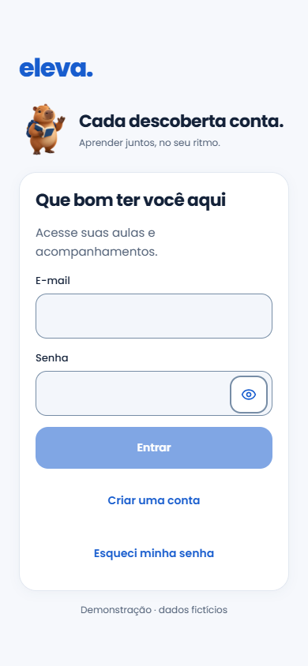
Responsável
Escolha explícita do estudante, com uma ação principal.
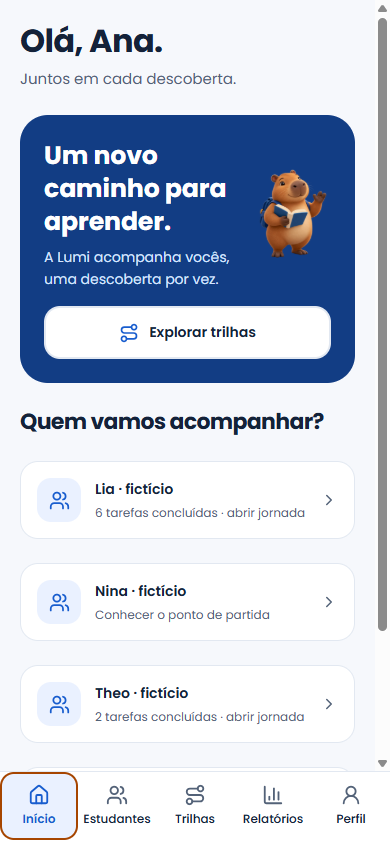
Professor
Autoria manual e atalhos para o trabalho diário.
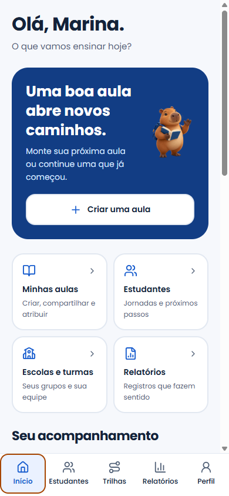
Professor no computador
Mesmos destinos, com navegação lateral e atalhos lado a lado.
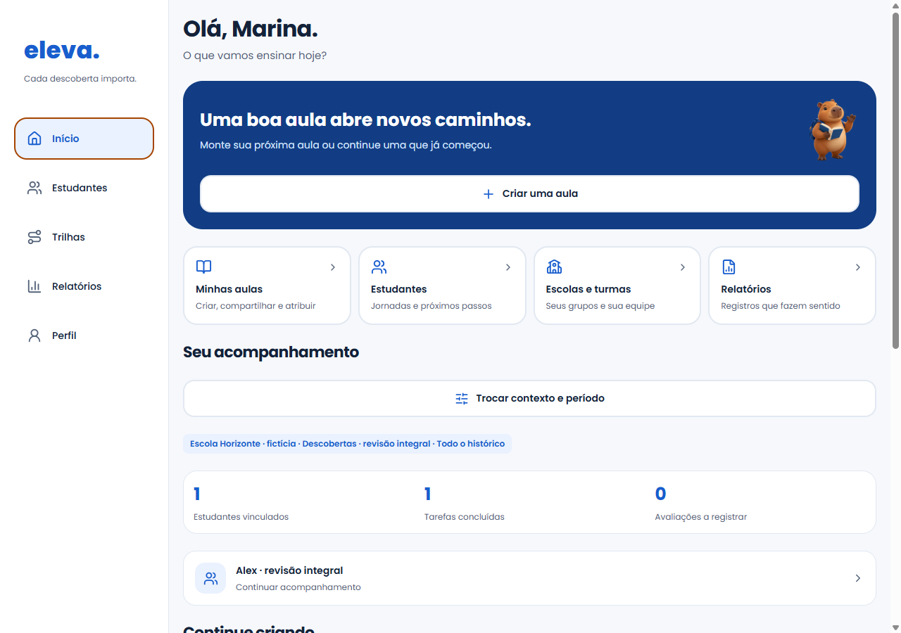
Gerenciar estudantes
Adicionar no cabeçalho e ações secundárias nos três pontos.
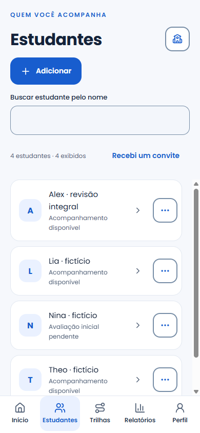
Jornada do estudante
Aprender, Acompanhar e Perfil organizam os próximos passos.
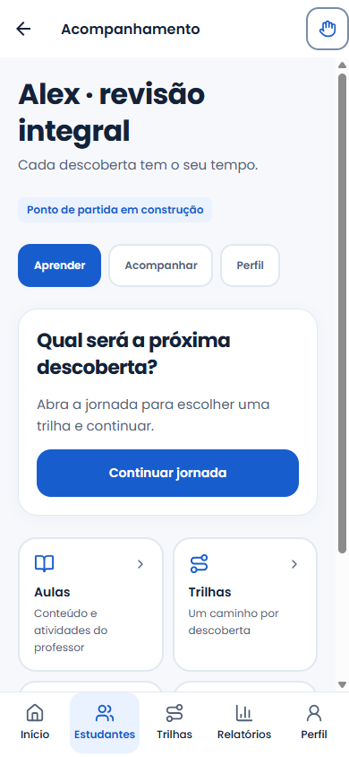
Escolher uma trilha
Capa abre o percurso; filtros e opções ficam sob demanda.
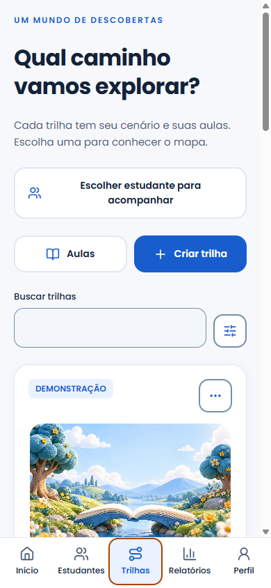
Mapa da aprendizagem
Aulas disponíveis e bloqueadas, sem transformar contagens em nível.
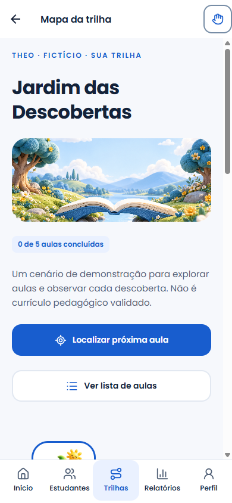
Biblioteca docente
Autoria, compartilhamento e versões preservadas.
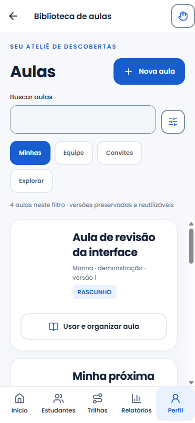
Relatório individual
Resumo, Respostas e Histórico; exportação pelo cabeçalho.
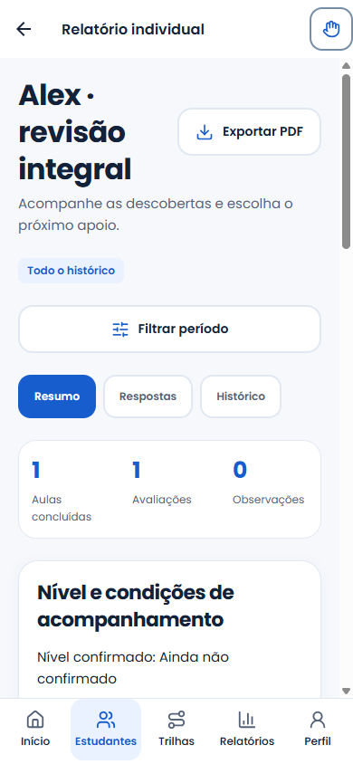
Perfil
Conta, contexto e acesso às configurações.
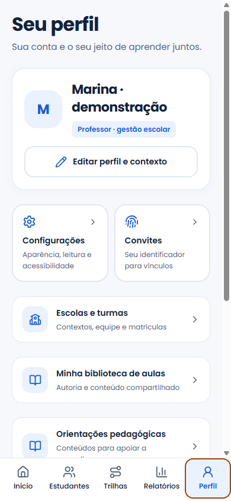
Texto ampliado e contraste
320 px, fonte adicional a 150% e alto contraste escuro; navegação quebra em duas linhas.
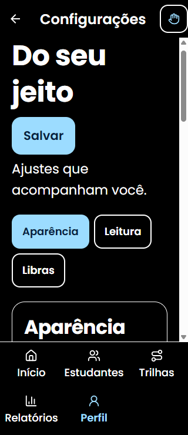
Construtor de aulas
Miniaturas sequenciais, controles acessíveis e salvamento no cabeçalho. Conteúdo da captura é demonstração sintética.
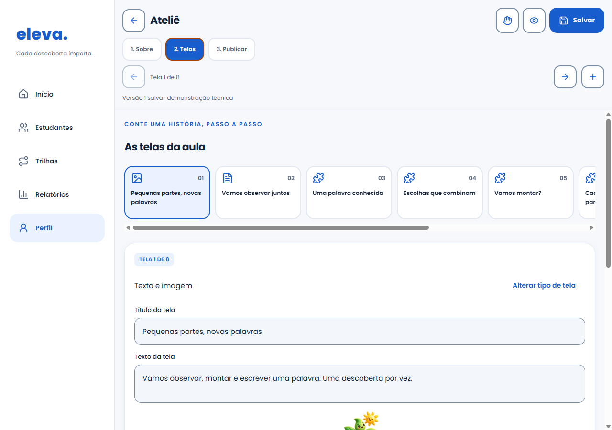